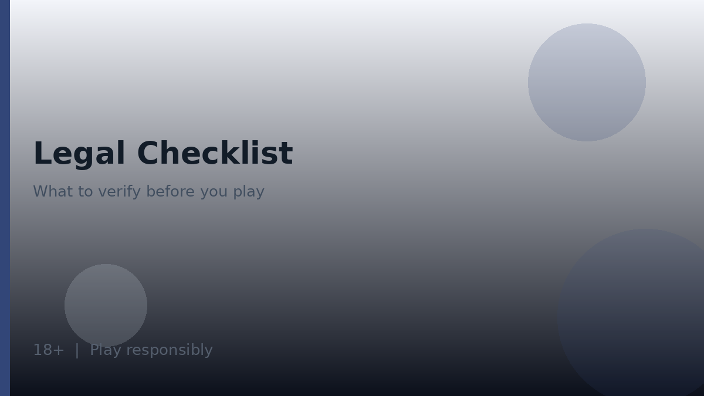
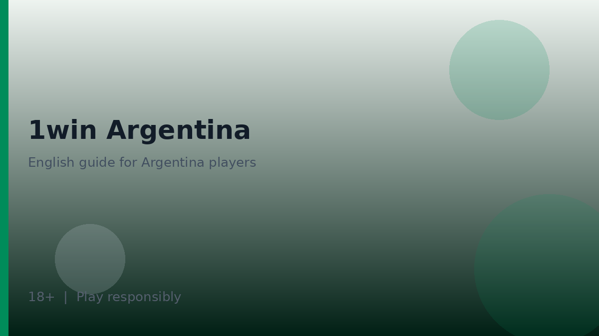

Is 1win legal in argentina? Scope of this checklist
Is 1win legal in argentina is a question that deserves a careful, non-alarmist, non-promotional answer. This page is an informational checklist for adults who want to verify eligibility and licensing claims themselves. It is not legal advice, not a court ruling, and not a guarantee of future regulatory outcomes. Laws and enforcement priorities can change.

Affiliate disclosure: even if partner links appear elsewhere on the site, they do not purchase a legal conclusion. We will not invent licence numbers, and we do not claim that 1win holds a UK Gambling Commission licence. Always verify operator disclosures and local rules that apply to you.
Use this checklist beside the geo landing 1win argentina and the brand overview on the 1win homepage. If you are not eligible to play, do not deposit. Educational reading is still fine; real-money activity is not.
Age is non-negotiable on this site’s framing: real-money gambling products are for adults aged 18 and over only. Do not facilitate access for minors.
Informational checklist: questions to answer yourself
Work through the following questions with primary sources open in another tab. Write answers in your own notes. If any answer is “unclear”, pause deposits until clarity arrives from competent local information.
- What do current local rules say about online betting and online casino play where I live?
- Does the operator’s site state that it accepts customers from my country or region?
- What licence or authorisation does the operator claim, if any, and where can I verify that claim?
- Am I at least 18 years old and able to pass identity checks?
- Do my payment providers allow gambling-related transactions for my account type?
- Have I read the terms on restricted territories and self-exclusion?
| Theme | Where to look | Healthy outcome |
|---|---|---|
| Local law | Official publications and competent summaries | Clear personal understanding—or a decision to abstain |
| Operator eligibility | Registration and terms pages | Explicit acceptance or an honest stop |
| Licence claims | Operator footer plus public registers | Verified or treated as unverified |
| Age and identity | KYC flows | Adults 18+ only with matching documents |
| Payments | Bank/wallet policies and cashier | No rule-breaking workarounds |
- Prefer primary texts over marketing blogs.
- Be wary of mirrors that omit legal footers.
- Do not use VPNs to disguise location to bypass restrictions.
- Keep copies of the terms version you accepted when possible.
Licensing claims: verify, do not assume
Online operators may display seal images or cite regulators. A seal image alone is not verification. Find the licence name or number on the operator site, then confirm it on the relevant public register if one exists. If you cannot confirm it, treat the claim as unverified and weigh that in your decision to deposit—or not.
| Step | Detail | Pitfall to avoid |
|---|---|---|
| Collect the claim | Copy exact wording from the operator | Relying on a third-party paraphrase |
| Find a register | Use the regulator’s official website | Random SEO blogs reprinting seals |
| Match identifiers | Name, number, status, dates | Ignoring expired or suspended statuses |
| Note jurisdiction | A licence elsewhere may not equal local permission | Assuming one licence covers all countries |
- We do not publish invented 1win licence numbers on this page.
- We do not assert UKGC licensing for 1win.
- We do encourage readers to re-check claims periodically.
- We do separate “licensed somewhere” from “lawful for me here”.

If registers are unavailable or unclear, that uncertainty itself is information. Some readers will wait; some will abstain. Both are responsible responses compared with forging ahead on rumour.
Age, consumer protections, and practical boundaries
Regardless of how you answer is 1win legal in argentina for your own situation, consumer-protection habits still apply. Use strong 1win login security, prefer official 1win app or browser paths, and read promotional rules before codes. See bonus code 1win for wagering literacy and 1win casino for lobby caution.
- Confirm you are 18+ and that nobody under 18 can access your devices while you are logged in.
- Set financial limits that protect essential household spending.
- Use self-exclusion or time-outs if you need a hard stop.
- Retain transaction records for your own clarity.
- Seek local professional advice for personal legal questions.
| Boundary | Why it helps | Related page |
|---|---|---|
| Adult-only access | Legal and ethical baseline | This checklist |
| Budget caps | Reduces harm even when play is lawful | Responsible tools in account |
| Official apps only | Reduces malware risk | 1win app |
| Crash literacy | High variance needs stricter caps | 1win aviator |

Consumer forums can share useful technical tips, but they are poor sources of legal conclusions. When in doubt, prioritise official texts and qualified local advice over anonymous certainty.
When regulations change and how to revisit the question
Regulatory frameworks for online gambling evolve. A conclusion you reached last year may need a fresh pass. Build a habit of revisiting is 1win legal in argentina whenever you move provinces or countries, whenever the operator updates eligibility notices, or whenever major local rule changes appear in official communications.
- Re-open operator restricted-territory clauses after app updates.
- Follow official government channels rather than rumour chains.
- Stop play while you reassess if eligibility becomes doubtful.
- Update your own notes with dates so you know when you last checked.
- Schedule a periodic eligibility review if you play regularly.
- Watch for email notices from the operator about country coverage.
- Refuse workarounds that hide location or identity.
- Return to 1win argentina for practical geo habits after each review.
| Trigger | Action |
|---|---|
| House move or travel relocation | Re-read local rules and operator eligibility |
| New operator terms version | Skim restricted territories and KYC sections |
| Payment provider policy change | Confirm gambling transactions still allowed |
| Media reports of rule changes | Verify against official publications |
Uncertainty is allowed. Abstaining is allowed. What this checklist argues against is confident real-money play built only on hearsay. Verify, document, and decide—with adult responsibility at the centre.
Further practical notes for careful readers
Readers using is 1win legal in argentina materials as orientation should keep three habits in parallel: verify the official access path, set entertainment budgets before depositing, and re-read operator terms whenever a promotion or product area changes. Those habits travel with you from homepage summaries into specialist articles without requiring you to memorise every interface label.
When something on a third-party site conflicts with the live cashier or written terms, favour the live product and the written terms. Screenshots age quickly. Informal chat summaries omit footnotes. Your own notes, dated and linked to the version of the terms you saw, will serve you better during support conversations than a collage of social-media claims.
Keeping expectations honest over time
Technical hygiene supports the same calm approach. Keep devices updated, refuse unsolicited installers, and treat unexpected login prompts as hostile until proven otherwise. If you share a household device, log out fully and protect credentials so minors cannot reach real-money areas. Adults aged 18 and over only may hold accounts on the framing used throughout is 1win legal in argentina coverage on this site.
Entertainment outcomes vary from session to session. A short run of favourable results does not prove a method; a short run of losses does not demand recovery stakes. The house edge in wagering products is structural. Your advantage as a consumer sits in preparation, limits, and the freedom to stop—not in predicting each round.
Pausing, reviewing, and returning with intent
If you need a deliberate pause, use the operator’s time-out or self-exclusion tools where available and seek local support resources when gambling stops feeling optional. Educational pages covering is 1win legal in argentina remain available for later reading; real-money play can wait. That separation—learn freely, stake only when eligible and prepared—is the through-line of this English informational site for Argentina-facing readers.
Return to internal links when you change topics rather than trying to hold every detail in working memory. Specialist pages exist so each subject can be thorough without turning every article into an encyclopaedia. Move with intent, verify as you go, and keep leisure spending inside a plan you would still respect tomorrow.
Product-area map you can reuse on any visit
Whether you open sports, casino, live tables or crash titles, keep the same mental map: entertainment first, verification second, stake size third. The diagram below summarises the product buckets most multi-vertical brands expose inside one account.
- Sports needs market-rule literacy before kick-off or tip-off.
- Casino lobbies need info-panel reading before the first spin.
- Live tables add connection quality as a practical factor.
- Crash titles add a cash-out timing decision that does not remove house edge.
| Check | What good looks like | Red flag |
|---|---|---|
| Domain authenticity | Typed or bookmarked official URL | Links from cold DMs or pop-ups |
| Age gate | Clear 18+ requirement before play | No age notice anywhere |
| Responsible tools | Deposit/loss/time limits visible | No limit controls at all |
| Terms access | Bonus and account terms linked near offers | Promo claims without T&Cs |
Evaluation sequence before any deposit
A calm sequence beats improvisation. Work left to right through domain authenticity, age eligibility, cashier visibility, limit tools and written terms. Skipping a step is how phishing pages and misunderstood bonuses slip through.
- Confirm you are on a genuine domain.
- Confirm you meet the 18+ requirement where you live.
- Open the cashier and note methods shown to your account.
- Locate deposit, loss and time-limit tools if offered.
- Read bonus and account terms before accepting any offer.
| Parameter | Safer habit | Why |
|---|---|---|
| Bankroll | Set a loss limit before opening the lobby | Stops chase behaviour mid-session |
| Time | Use a reality-check or phone timer | Short rounds compress time perception |
| Games | Pick one product area per session | Reduces impulsive switching |
Responsible gambling
18+. Casino games, sports betting and crash titles discussed on this site are intended for adults aged 18 and over only. Gambling can be addictive - please play responsibly and never stake more than you can afford to lose.
- International support information: BeGambleAware.
- Advice and treatment resources: GamCare.
- If you are in Argentina, also look for locally available counselling and helpline resources through public health channels, and use any deposit/loss/time limits the operator provides.
1win Argentina Guide publishes informational reviews and checklists. We do not invent licence numbers or claim UK Gambling Commission status for operators without verification in data/casinos/. Nothing on this site is financial or gambling advice, and no outcome is promised.